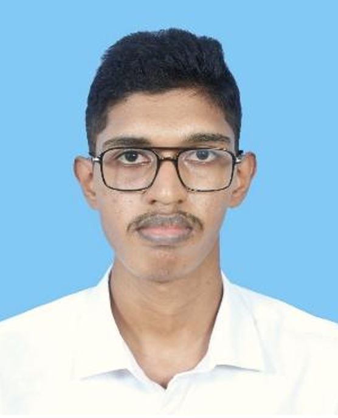

Lithuhash M.
First-year BSc (Hons) Biotechnology student at SLIIT, with a growing interest in bioinformatics and Python programming.
About me

I am a first-year Biotechnology student at the Sri Lanka Institute of Information Technology (SLIIT), in the Faculty of Humanities and Sciences.
I enjoy connecting laboratory science with computing. I am learning Python and Biopython so that I can analyse biological data, and I use this portfolio to collect my education, projects, skills and contact details in one place.
Educational qualifications
-
BSc (Hons) in Biotechnology, SLIIT
Current modules: Introduction to Biology, Introduction to Biotechnology, Analytical and Physical Chemistry, Laboratory Safety and Management, and Introduction to Information Technology.
-
Hindu College
G.C.E. Ordinary Level: 9 A passes.
G.C.E. Advanced Level: examination completed.
Work experience
I do not have formal work experience yet. My academic and team projects are listed below.
Professional qualifications
-
CS50’s Introduction to Programming with Python (CS50P)
Harvard University online course that gave me my foundation in Python.
Projects
-
Application of Microorganisms: bioplastics poster
An individual double-sided A3 poster explaining how microorganisms are used to produce bioplastics.
-
Debate on the ethics of synthetic biology
A group debate on ethical issues in biotechnology, held on 2 September 2026 with Group 6.
-
Career Trajectory in Biotechnology
A five-minute presentation on a biotechnology role model and my own planned career path.
-
The Future of Biotechnology in Sri Lanka
An AI-assisted PowerPoint presentation with speaker notes, referenced sources and a reflection on how AI contributed.
-
This e-portfolio
A static website written in HTML, CSS and Markdown and hosted on GitHub Pages.
Skills
- Programming
- Python, Biopython (learning), HTML and Markdown
- Tools
- Git and GitHub, Visual Studio Code, Microsoft Word and PowerPoint
- Communication
- Scientific posters, presentations, debate and teamwork
- Laboratory
- Laboratory safety and standard operating procedures (coursework)
Hobbies
- Learning Python and exploring bioinformatics with Biopython